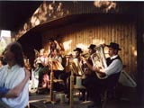
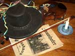
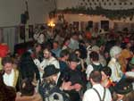
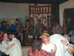
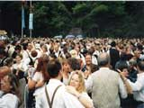
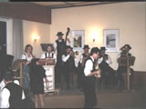
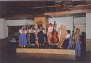
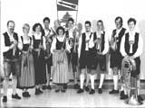
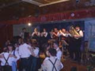

Foto's Seite 6
| Seite 6 von 6 |
 |
Foto's von Ratzenhofen von einem schönen Maitag. | |
 |
Foto's vom Faschingsspezial aus dem Frauenhofer in München | |
 |
Foto's vom 1.Faschingsvolkstanz in Rohrbach 2003 | |
 |
Ein Foto vom Faschingsvolkstanz in Hinterskirchen 2003 | |
 |
Foto's vom Kocherlball 2001 in München im englischen Garten. | |
 |
Foto's vom Osseltshausen Ostern 2001 | |
 |
Volkstanz in Kirchdorf 1999 | |
 |
Foto's vom 50 jährigen Jubiläum der Dellnhauser Musikanten. | |
 |
Ein Foto von den Höhenkirchner Musikanten. | |
 |
Zwei Foto's vom Volkstanz in Nandlstadt (98). |